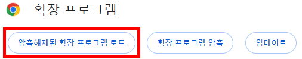
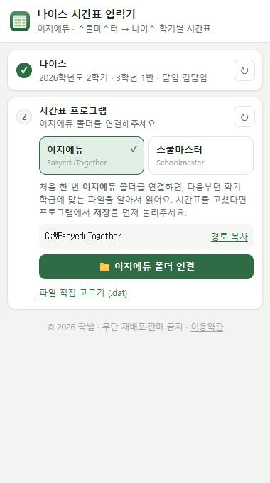
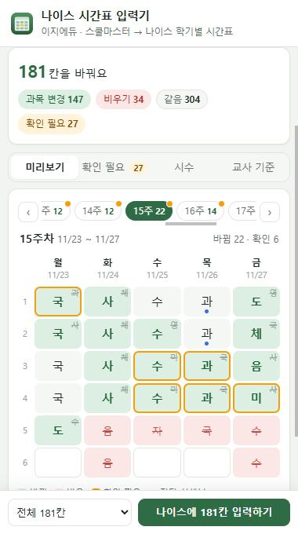
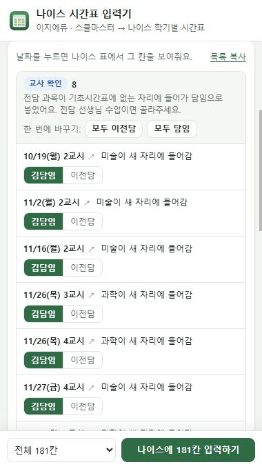
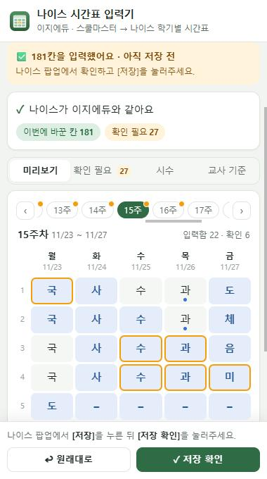

나이스 시간표 입력기는 이지에듀나 스쿨마스터에서 재구성한 연간시간표를 읽어서, 나이스 학기별 시간표 관리 화면에 다른 칸만 자동으로 입력해 주는 크롬 확장 프로그램입니다. 먼저 파일을 받아 압축을 풀어 주세요.
크롬 웹스토어를 거치지 않은 확장 프로그램이라 개발자 모드를 켠 뒤 폴더를 직접 불러옵니다. 처음 한 번만 하면 돼요.

| 프로그램 | 연결할 폴더 |
|---|---|
| 이지에듀 | C:\EasyeduTogether |
| 스쿨마스터 | C:\Schoolmaster 2026 |
다음부터는 나이스의 학년도·학기·학년·반에 맞는 시간표 파일을 알아서 찾아 읽어요.

패널이 나이스와 시간표 파일을 비교해서 다른 칸만 골라 보여줘요. 입력하기 전에 여기서 먼저 확인합니다.

| 표시 | 뜻 |
|---|---|
| 초록 칸 | 바뀔 칸 — 오른쪽 위 작은 글자가 원래 과목 |
| 빨강 칸 | 비울 칸 — 수업이 없어지는 칸 |
| 파랑 칸 | 이번에 입력한 칸 |
| 주황 테두리 | 확인 필요 — 헷갈릴 수 있는 칸 |
| 파란 점 | 전담 선생님 수업 |
헷갈리는 칸이 있어도 멈추지 않고 끝까지 넣은 뒤, 그런 칸만 날짜·교시로 모아 확인 필요 탭에 보여줘요. 날짜를 누르면 나이스 칸으로 이동해요.
| 묶음 | 이런 칸 |
|---|---|
| 교사 확인 | 전담 과목이 기초시간표에 없는 자리에 들어가 담임으로 넣은 칸 — 버튼으로 선생님을 바로 바꿀 수 있어요 |
| 전담 시간 바뀜 | 전담 선생님 수업 자리에 다른 과목이 들어간 칸 |
| 건너뛴 칸 | 나이스 행사·휴업일, 학기 밖, 모르는 글자 등으로 넣지 않은 칸 |
모두 ○○○ 버튼으로 한꺼번에 바꿀 수 있고, 고른 선생님은 기억해요. 목록 복사로 메모해 둘 수도 있어요.

